Custom Ti-Bike Part II — Design
My last post detailed the initial ideas for my titanium build, this post jumps a few weeks forward (full of intense delibration and decision-making) to initiating contact with a manufacturer and going through the design process.
Selecting a Manufacturer
There are three main titanium manufacturers in China that are willing to fabricate one-offs for western customers, Titan, Waltly, and XACD. I sent an inquiry to all three to get a price quote and to feel them out.
XACD
XACD is the oldest, they've been doing custom titanium bicycle frames for over a decade and for awhile they were the only ones doing it. That presumably means they have the most experience, and perhaps the highest quality. I had read that they were the only one of the three who did double-butted tubing, but that has changed recently since both Waltly and Titan offered that feature to me for an additional fee. In general, XACD would most likely be able to accomodate exotic requests, like a titanium-carbon hybrid, but they'd also probably charge quite a bit extra for it.
Their main caveat is their point of contact, the infamous Porter. He's gotten quite a few negative reviews as being impatient and rude. Although some other reviews appreciate his promptness and directness that push the process along as fast as possible.
My own brief experience with him wasn't bad. After sending my initial inquiry, he responded within hours with a full invoice and asked for a downpayment. I felt quite rushed!
Waltly
Waltly is a relative newcomer compared to XACD, I believe they've been fabricating frames for less than a decade. The frame designer you work with is Sumi or Amy who are both very polite and helpful. Quite a few of the custom builds on Spanner were done by Waltly, which inspired some confidence.
Titan
Even more of a newcomer, Titan has only been in business since 2012 or so. There are also quite a few builds on Spanner by Titan, although there is a very negative experience from one customer. With Titan, you work with Eric, who is also very polite and helpful.
Choice
I ended up choosing with Sumi & Waltly Titanium. The price was marginally better than the other two, but mainly I felt that Sumi was really helpful, quick responding, and would carefully guide me through the frame design process. I also saw many successful builds on Spanner (1, 2, 3) that were quite similar to mine, so I knew they were capable of building a quality frame based around my feature set.
My second choice would have been Porter & XACD, but I felt a bit intimidated. I knew that the frame design process would take several iterations. I predicted asking a lot of questions, wavering back and forth on decisions, and changing my mind as I educated myself about frames. Although Porter might accommodate these requests, I wouldn't feel comfortable and I could imagine him rushing me forward through te process. As for Titan, I didn't get very prompt replies from Eric, which was a negative predictor of how the overall experience would go.
Bike Fit
Since I was spending so much time and money on a custom frame, I really needed a proper bike fit to dial down my exact geometry. I Googled for bike fitters in San Francisco, and initially scheduled a fit with Bespoke Cycles, but canceled and went with 3D Bike Fit instead. From reading reviews and the website description, I just had a feeling that 3D Bike Fit would offer me a more comprehensive service.
What followed was a three plus hour session where my body was closely examined for measurements, flexibility, and reach. Towards the end I was videotaped pedalling on a retul bike machine to figure out the perfect geometry for my riding.
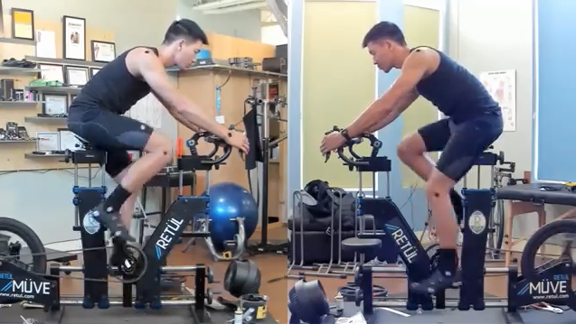
Having fun on the machine :)
I finished the session with critical dimensions in hand, stack, reach, crank length, drop bar dimenions, saddle type, etc. Besides that, I also got some other things beyond what I expected, but I also paid a lot more than I expected.
Unexpected Benefits
- I learned—for the first time in my life—that I have extremely high foot arches, which results in my feet flattening out throughout the day of walking, and causing a very pronounced duck stance. This also explains why my toes go numb in snowboard boots—it's because my arches flatten out over the course of the run, and my toes jam into the front of the boot. After this bike fitting session I bought cheap orthopedic arch support for all my sneakers and have felt a lot more comfortable walking around.
- I learned to focus on better pedaling technique. I was previously abusing my quadriceps to smash down on the pedals, resulting in a lot of strain on my knees and ankles. The proper pedaling technique is to unlock the ankles, letting them flow freely, and try to move in a forward circular motion instead of like stomping down on stair steps.
Unexpected Costs
- I walked into the shop with value-priced $100 Giro road bicycle cleats. But I was convinced to return those and purchase $200 Specialized Torch 3.0 cleats from 3dbikefit because of built in arch support, which is important for my high foot arches. It's certainly a nice shoe, but quite overpriced for a beginner.
- I also bought "custom footbeds" from them for $179. Basically they have this heat-molded foam that conforms to the exact shape of my foot sole to insert into the cleats. Important for arch support for my high foot arches, but also quite pricy.
- The last upsell was a saddle. I ended up trying several saddles they had in stock and actually liked the saddle they custom designed the most. It's a $130 gel saddle with titanium rails and is quite lightweight. This is less of an upsell since if I didn't purchase this I would have purchased a different saddle in the same price range.
Frame Design
Once I had my bike fit complete, I was ready to begin the frame design. I paid a 30% down payment to Waltly via paypal, and eagerly awaited my first CAD drawing from Sumi.
Iteration #1
The first drawing Sumi sent me had the general idea, but several things were off and several things needed to be clarified. I tried a few different communication methods, and found diagrams and technical terms to be the most effective. Sumi's English is okay, just about good enough to fabricate a frame with an English speaker. It's a bit like playing reverse Mad Libs, where she has full understanding of technical terms but is missing the transition words in between them.
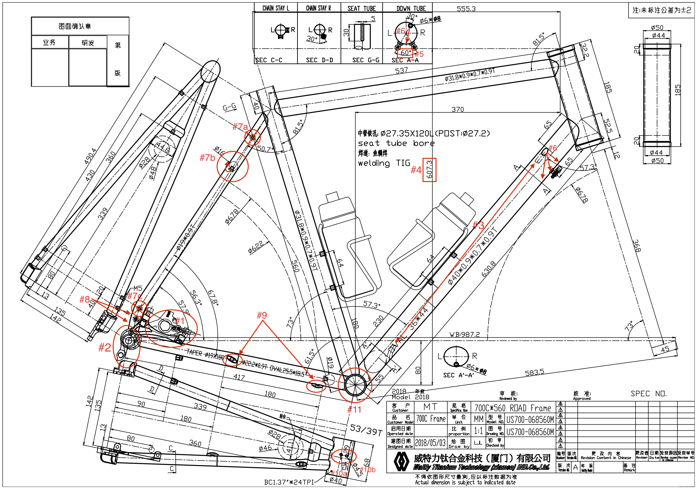
The first annotated drawing I sent back
- flat-mount, not post-mount disc brake
- please provide a picture of the dropout, is the hangar replacable?
- the internally routed cable only shows the beginnings of a guide tube, is it just a hole with an entrance or does the tube extend all the way? This would come back to bite me later on.
- 607.3mm reach is too low, I asked for 610mm
- increase the angle of the downtube barrel adjusters to 90 degrees
- move the entrance of the rear brake cable routing to the underside of the downtube. I thought it looked cleaner to have all cables on the underside, it looks weird to have a cable randomly going in on one side of the downtube.
- remove some of the fender/rack mounts. It's overkill, I'll reuse the same mount for both fenders and racks.
- straighten the seatstay since no curve should be necessary with a flat-mount
- change the cable stop from a zip-tie based stop to a hollow cylinder type
- What is the second 4.5mm diameter hole for? Sumi explained that this was a drain hole to prevent fluid buildup. it's nice that they generally know what they're doing so they'll put the important stuff in even if I don't explicitly specify it.
- please confirm that this is a 68mm English Threaded BSA bottom bracket
Iteration #2
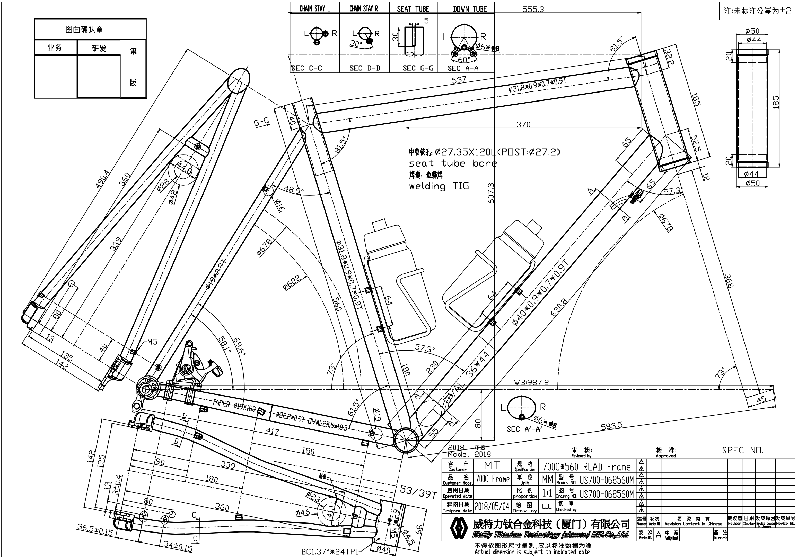
Much closer, but still needs more tweaking.
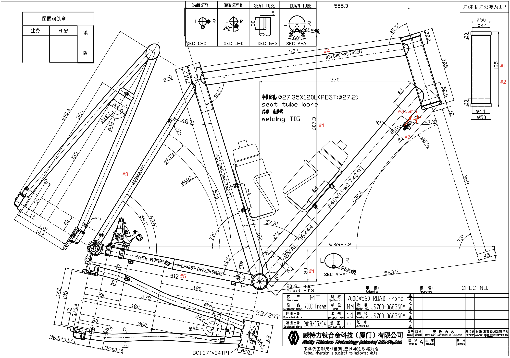
- I had to repeat asking for a 610mm stack. It turns out this couldn't just magically increase from 607mm to 609mm, other frame parameters needed to be adjusted to make it happen. I asked for the bottom bracket drop to be reduced, and the headtube length increased to get it to 609mm
- I asked for an hourglass shaped headtube that I found in another one of Waltly's frames.
- reduce the seatstay tubing diameter from 19mm to 16mm. I saw many other builds using 16mm tubing, so I figured I'd save some weight and give the bicycle a sleeker thinner tube aesthetic.
- let's try a 34.9mm diameter top tube to reduce flex
- increase the chainstay length to 425mm. There's a bit of a controversy going around in the bicycle frame building world about chainstay lengths. The general consensus is that longer chainstays result in a more stable ride, and shorter chainstays result in a more agile ride (and marginally better weight). Some frame builders unpopularly believe longer is strictly better, a shorter chainstay doesn't make you more agile, just less stable. I decided to trust the unpopular opinion because it made sense to me, and at the end of the day I was only asking for a <1cm difference.
- readjust the positioning the barrel adjusters and internal cable hole
Iteration #3
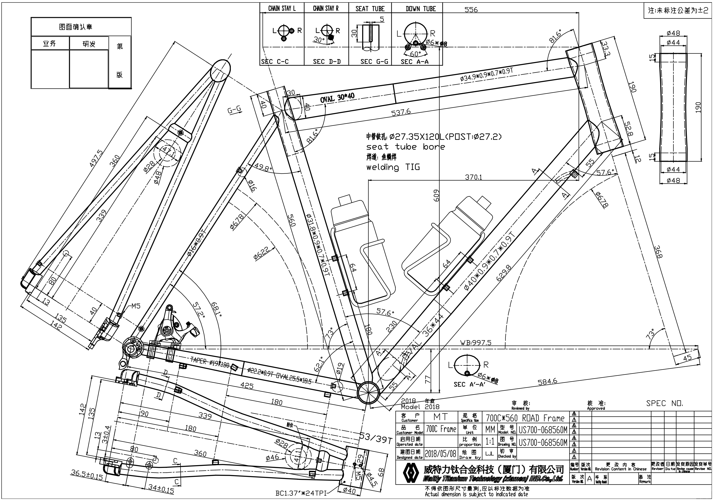
Almost perfect
When I previously asked for a 34.9mm top tube, I didn't realize Waltly would have to taper the end of it in order to match the 31.8mm seat tube. I was okay with the large thick downtube being tapered to fit the bottom bracket, but a tapered top tube seemed to look funny to me. So I back-pedaled and asked Sumi to switch it back to a 31.8mm top tube. I hoped this double-butted frameset wouldn't be too flexy for me.
Iteration #4
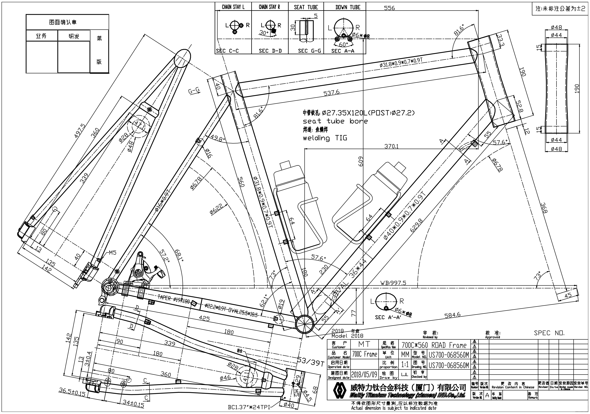
Final iteration
The only difference here was the aforementioned top tube diameter. I signed off on this and offered to pay the remaining 50% down payment that Waltly specified on the invoice. Sumi said no need for the additional payment, Waltly would begin the frame construction. I think from my fastidiousness, Sumi was fully confident that I was really serious about this frame, and so she saw no need for an additional down payment :). I now had a few weeks of quiet to eagerly await my frame. In the mean time, I worked on the logo files, which I could supply later since the logos aren't applied until the entire frame is complete.
Logo Selection
I spent the next few weeks brainstorming what kind of logos I wanted. I again perused FireFly's tumblr for ideas. I wanted something subtle, technical, and with some unique meaning for myself. I briefly considered embroidering my name on the top tube, but honestly I'm not super proud of my name. "Matthew" is an extremely common first name, and my last name, "Tse" is far too short and just as common—at least in Asia. I eventually came up with:
Headtube — I had the great idea of putting the periodic table symbol for Titanium as the head badge. I couldn't find a suitable image online, so I made my own custom elemental symbol. Every bit of type on this symbol is custom font and size selected.
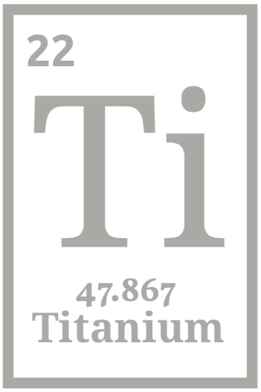
Top tube — I settled on "Titanium | 3Al2.5V" to indicate the particular alloy this frame was made out of. The font used is Google's Roboto, which I thought looked particularly good as a bike logo.
Down tube — This is where I put a personal touch in. A pair of literary references from my favorite science fiction books. Also in the roboto font, but bolded and italicized.
I ended up using a free cloud based editor, gravit.io to create the logos. I then asked a designer-savvy friend of mine to convert them into the .eps files requested by Sumi.
Final Component Selection
Once the frame was done, I began finalizing and ordering all the components. My general philosophy was to spend a bit more on things that mattered, like the groupset, or contact points such as the saddle and pedals. And I'd skimp on things that don't need to be high quality, like cheap $17 shipped from China eBay aluminum handlebars.
- Shimano Ultegra R8020
Hydraulic Disc Groupset
- I settled on the Ultegra level because it felt buttery smooth and magical, quite a step above the feel of the lower groupset models. I tried a Dura-Ace set out, and didn't feel much of a difference, so I figured the upgrade was mostly negligible weight savings.
- I decided against Di2, because I didn't want any part of my bicycle to be electronic. My eletronics break all the time, and battery life degrades over time because of #Electricity. I would feel much more confident with a shifter set that I can fully understand and maintain myself—just screws and cables with the mechanical groupset.
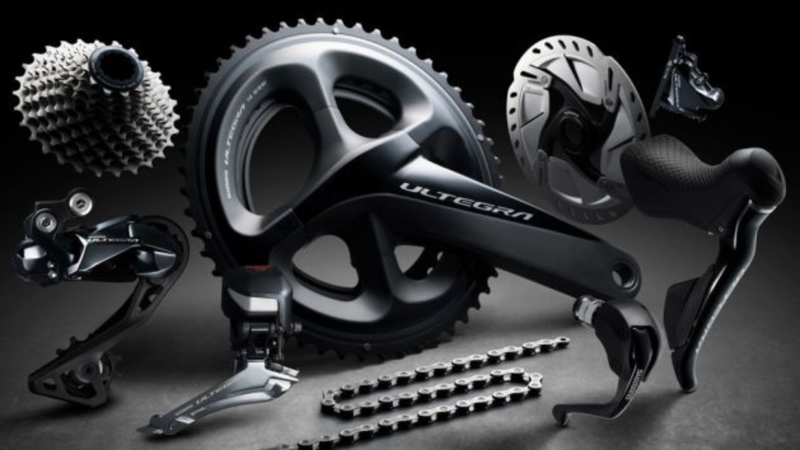
The newest Ultegra has a sleek matte black styling.
- Whiskey No. 7 RD 12mm Thru-axle Carbon Fork
- I really wanted to use a brandless Chinese fork from Waltly or HongFu, which would have saved some $300, but fears about reliability and the image in my mind of the fork snapping and me crashing led me to choose a reputable brand. Whiskey was a few hundred dollars cheaper than the closet model by ENVE.
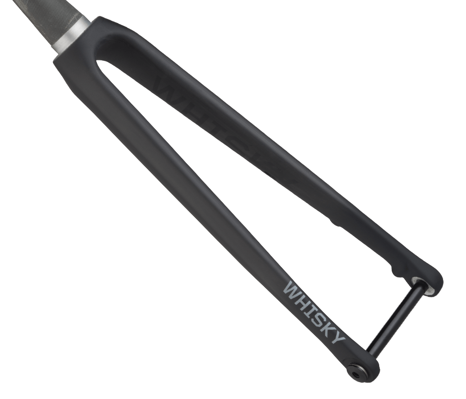
- Hunt
4 Season Disc wheelset
- a set of OEM wheels distributed in the UK, made in China. The website is well designed and sells the wheelset well. Overall I chose them because of the value price, the nice subtle matte-black graphics, and a good quoted weight.
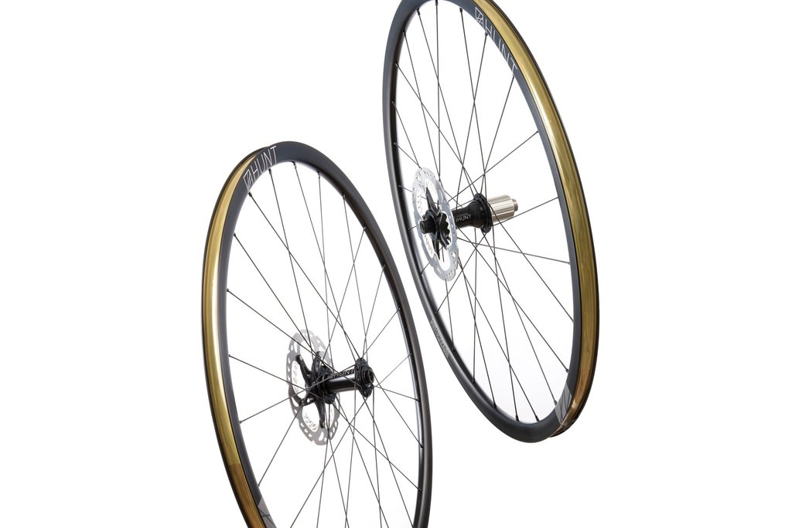
- Continental Grand Prix 4 Season 700x28c
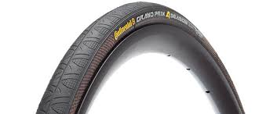
- Kalloy Uno Drop Bars
- Kalloy Uno Stem
- Lizard Skins DSP 1.8mm handlebar tape
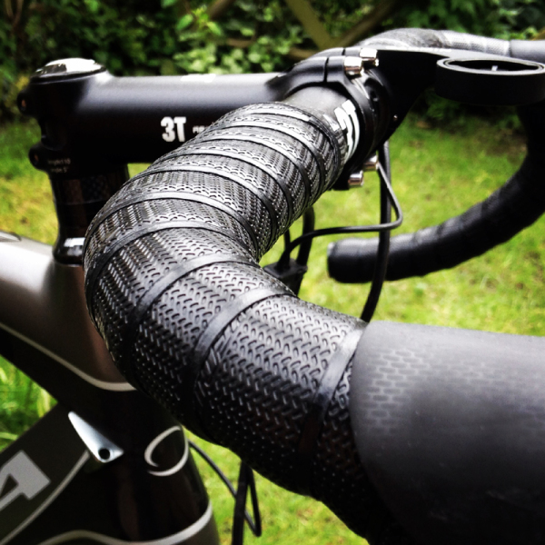
- KCNC Sepro AL 27.2x350mm, 25mm offset seatpost
- no-name titanium seat post clamp
- Cane Creek 40 ZS44/28.6 EC44/40 headset
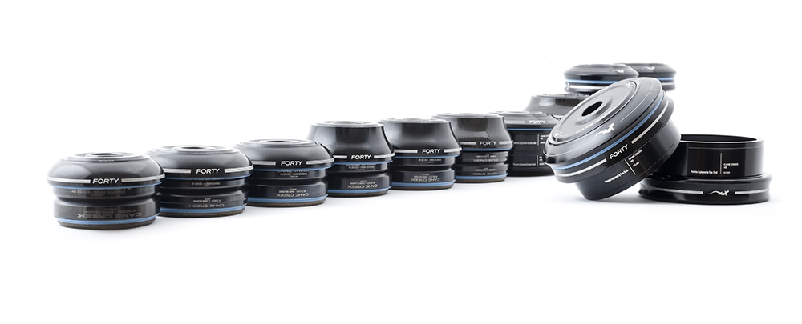
- Shimano Ultegra SPD-SL
Pedals
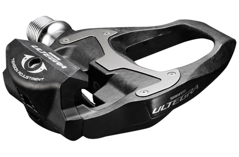
- Velo Orange Moderniste
Stainless Steel Bottle Cages x2
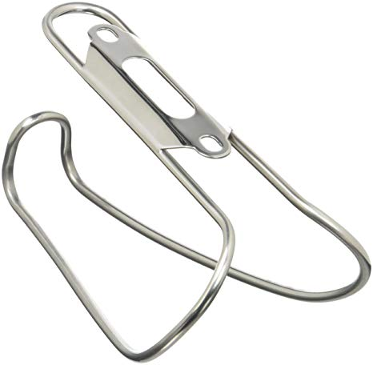
The upcoming followup: Part III — Build, details the arrival of all parts and the construction of my bicycle.